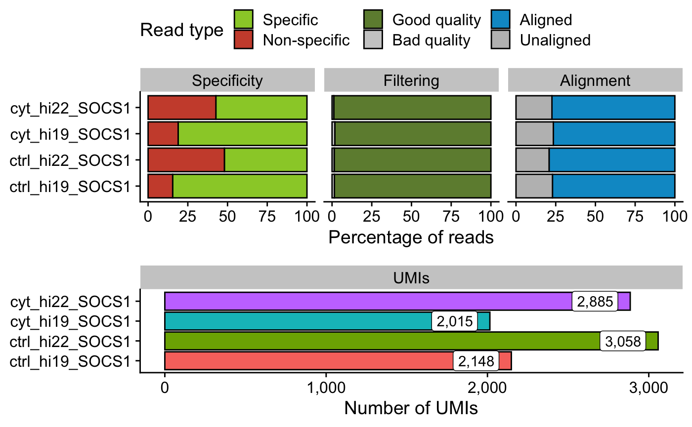
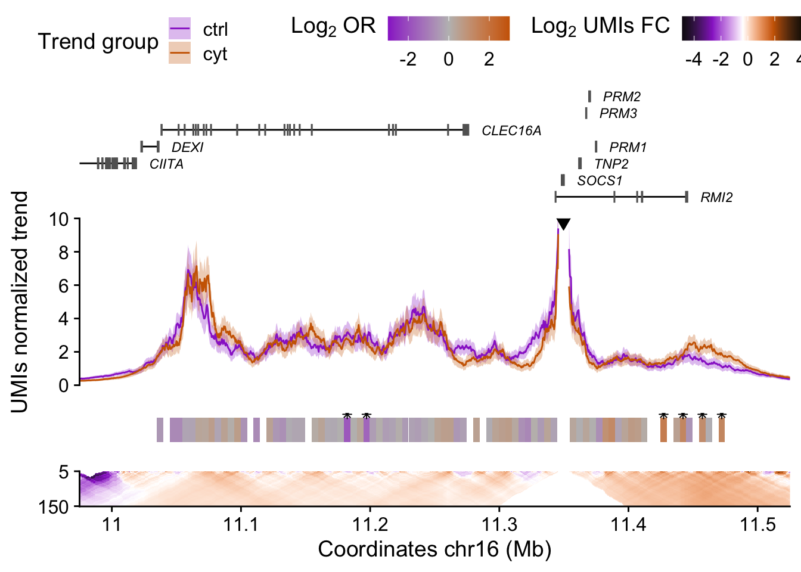
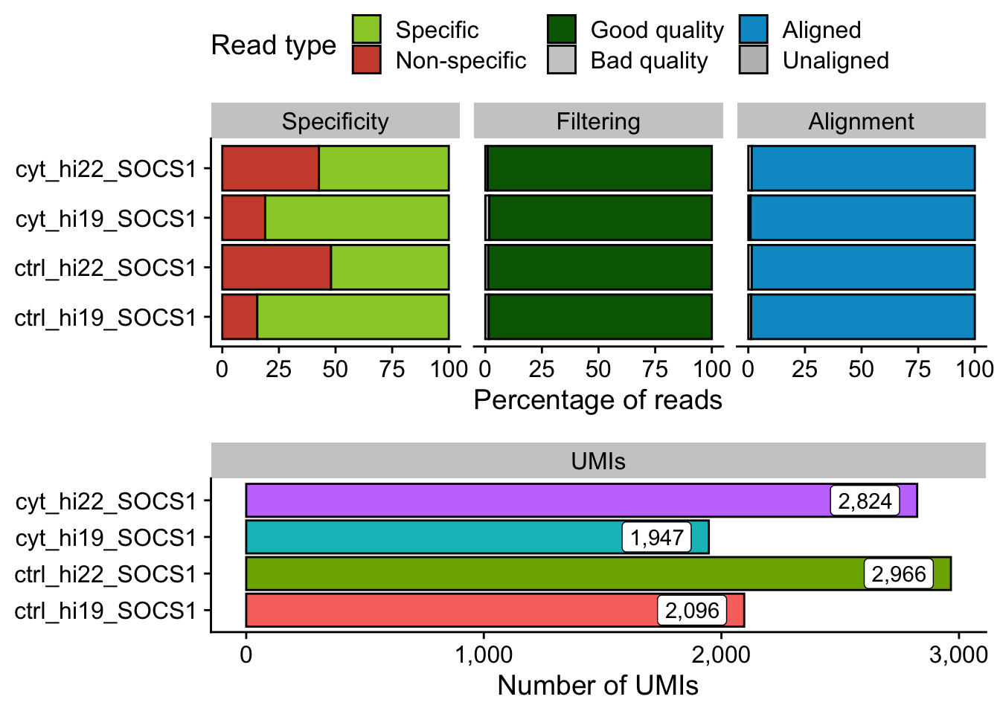
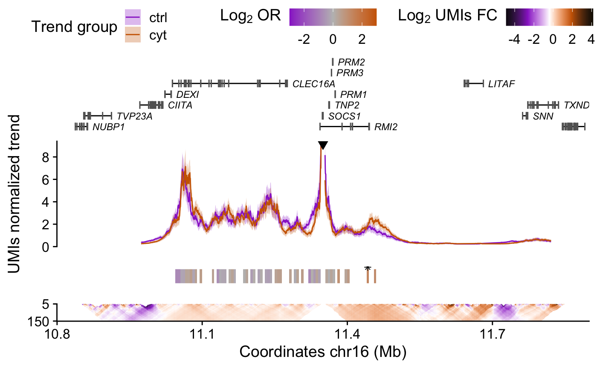

Analyzing UMI-4C data with UMI4Cats
Mireia Ramos-Rodríguez & Marc Subirana-Granés
2020-01-10
umi4cats-usage.RmdIntroduction

Hello stranger! If you are here, that means you’ve successfully completed the UMI-4C protocol and got some sequencing results.
Quick start
Processing FASTQ files
## 1) Generate Digested genome ----------------------------
# The selected RE in this case is DpnII (|GATC), so the cs5p is "" and cs3p is GATC
hg19_dpnii <- digestGenome(cut_pos = 0,
res_enz = "GATC",
name_RE = "DpnII",
ref_gen = BSgenome.Hsapiens.UCSC.hg19::BSgenome.Hsapiens.UCSC.hg19,
out_path = "digested_genome/")
## 2) Process UMI-4C fastq files --------------------------
raw_dir <- system.file(file.path("extdata", "SOCS1", "fastq"),
package="UMI4Cats")
contactsUMI4C(fastq_dir = raw_dir,
wk_dir = "SOCS1",
bait_seq = "CCCAAATCGCCCAGACCAG",
bait_pad = "GCGCG",
res_enz = "GATC",
cut_pos = 0,
digested_genome = hg19_dpnii,
ref_gen = "/biodata/indices/species/Hsapiens/ucsc.hg19.fa",
threads = 5)Analyzing UMI-4C results
## Get filtering and alignment stats ---------
statsUMI4C(wk_dir = system.file("extdata", "SOCS1",
package="UMI4Cats"))
# Load sample processed file paths
files <- list.files(system.file("extdata", "SOCS1", "count",
package="UMI4Cats"),
pattern="*_counts.tsv",
full.names=TRUE)
# Create colData including all relevant information
colData <- data.frame(sampleID = gsub("_counts.tsv", "", basename(files)),
file = files,
stringsAsFactors=F)
library(tidyr)
colData <- colData %>%
separate(sampleID,
into=c("condition", "replicate", "viewpoint"),
remove=FALSE)
# Load UMI-4C data and generate UMI4C object
umi <- makeUMI4C(colData=colData,
viewpoint_name="SOCS1")
# Perform differential test
umi <- fisherUMI4C(umi,
filter_low = 20)
# Plot results
plotUMI4C(umi,
ylim=c(0,10),
xlim=c(11e6, 11.5e6))
Processing UMI-4C FASTQ files
Reference genome digestion
For the processing of the UMI-4C FastQ files it is necessary to construct a digested genome using the appropriate restriction enzyme. The UMI4Cats package includes the digestGenome() function to make this process as easy as possible. The function uses a BSgenome object1 as reference genome and given a cutting sequence for the description enzyme, digests the reference genome.
The cutting position is defined by cut_pos a zero-based numeric integrer indicating the nucleotide position where restriction enzyme cuts.
In the following table you can see two examples of the different cutting sequences for DpnII, Csp6I and HindIII.
| Restriction enzyme | Restriction seq | cut_pos |
|---|---|---|
| DpnII | |GATC |
0 |
| Csp6I | G|TAC |
1 |
| HindIII | A|AGCTT |
1 |
For this example, we are using the hg19 BSGenome object and we are going to digest it using DpnII.
library(BSgenome.Hsapiens.UCSC.hg19)
refgen <- BSgenome.Hsapiens.UCSC.hg19
hg19_dpnii <- digestGenome(res_enz = "GATC",
cut_pos = 0,
name_RE = "dpnII",
ref_gen = refgen,
out_path = "digested_genome/")
hg19_dpnii
#> [1] "digested_genome/BSgenome.Hsapiens.UCSC.hg19_DpnII.tsv"Additionally, the digestGenome() function returns invisibly the path of the generated file, so you can redirect it to a variable (in this case hg19_dpnii).
Demultiplex FastQ files for different baits
UMI4Cats package provides a function for demultiplexing parser for demultiplexing paired-end FastQ files. Barcodes and bait names need to be provided as a data.frame as follows in the next example:
UMI-4C FastQ files processing
This step converts paired-end reads in the FastQ files to UMI counts in the genome fragments generated using the restriction enzymes. The basic function for doing this analysis is contactsUMI4C() and should be ran in samples generated with the same viewpoint and restriction enzyme.
The function will consider all FastQ files in the same folder fastq_dir to be part of the same experiment (viewpoint + restriction enzyme). The paired-end FASTQ files in this folder have to have one of the follow extensions: _RX.fastq, _RX.fq, _RX.fq.gz or _RX.fastq.gz.
For every experiment analysis, the user needs to define 3 different sequences: - Bait/viewpoint sequence (bait_seq). This is the downstream primer sequence (DS primer) that matches the sequence of the queried bait. - Padding sequence (bait_pad). The padding sequence corresponds to the nucleotides betweeen the DS primer end and the restriction enzyme site. - Restriction enzyme sequence (res_enz). This sequence is the restriction sequence recognized by the selected restriction enzyme.

Additionally, it is necessary to define the restiction enzyme cutting postion (cut_pos) in the restriction sequence which corresponds to the site where the restriction enzyme cuts the sequence. For example, for DpnII (|GATC) cut_pos = 0 and for Csp6I (G|TAC) cut_pos = 1. The function will also need the path for the digested genome (digested_genome) generated with the function digestGenome().
As contactsUMI4C() performs the alignment using Bowtie2, you will also need to provide a reference genome in fasta format and the corresponding indexes generated with bowtie22, which need to be located in the same folder as the fasta file.
raw_dir <- system.file(file.path("extdata", "SOCS1", "fastq"),
package="UMI4Cats")
contactsUMI4C(fastq_dir = raw_dir,
wk_dir = "SOCS1",
bait_seq = "CCCAAATCGCCCAGACCAG",
bait_pad = "GCGCG",
res_enz = "GATC",
cut_pos = 0,
digested_genome = hg19_dpnii,
ref_gen = "/biodata/indices/species/Hsapiens/ucsc.hg19.fa",
threads = 5)contactsUMI4C() will run the following processes sequentially:
- FastQ files preparation (
prepUMI4C). - Split reads at restriction sequences (
splitUMI4C). - Align split reads to the reference genome (
alignmentUMI4C). - Algorithm for collapsing reads coming from same molecule, returning all fragment ends 10Mb around the viewpoint(
counterUMI4C).
For the preparation and splitting, the FastQ file is loaded into memory. If you are having problems with the memory size, you can change the number of lines to be loaded using the numb_reads parameter. See ?contactsUMI4C for more information.
Finally, the output (UMI-4C counts) is a tsv file saved in wk_dir/count. This file will be the input for the data analysis in the following section.
Quality control measures
Once the contact analysis has been ran, the statistics of the UMI-4C filtering, aligment and final number of UMIs can be generated from the logs generated by the contactsUMI4C() function.
By using these logs, the function statsUMI4C() will produce a summary plot .

Analyzing UMI-4C data
For this part of the analysis each bait should be analyzed separately. A different UMI4C object should be created for each analyzed bait.
Construct the UMI4C object
The first step of the UMI-4C data analysis consists on loading the tables generated by the function umi4CatsContacts and use them to construct a UMI4Cobject. All these steps are perform automatically by the makeUMI4C functions.
The makeUMI4C will need as imput a data frame (colData) containing all relevant experiment information that will be needed for analyzing the data later on. The mandatory columns that this data frame should have are:
-
sampleID: Unique identifier for the sample. -
replicate: Replicate identifier or number. -
condition: Condition for performing the diferential analysis. For example: “control” and “treatment”, two different cell types, etc. The condition column should only have two different values. If more condition variables are provided, the differential analysis will fail. -
file: Complete path and filename where the tsv files generated byumi4CatsContactsare saved.
You can also include additional columns to colData, but the ones mentioned above are mandatory.
Additionally, the makeUMI4C function also contains other arguments that can be used if you want to tweak the default parameters of the analysis. See ?makeUMI4C to have a complete list and description of all the arguments.
# Load sample processed file paths
files <- list.files(system.file("extdata", "SOCS1", "count",
package = "UMI4Cats"),
pattern = "*_counts.tsv",
full.names = TRUE)
# Create colData including all relevant information
colData <- data.frame(sampleID = gsub("_counts.tsv", "", basename(files)),
file = files,
stringsAsFactors = FALSE)
library(tidyr)
colData <- colData %>%
separate(sampleID,
into = c("condition", "replicate", "viewpoint"),
remove = FALSE)
# Load UMI-4C data and generate UMI4C object
umi <- makeUMI4C(colData = colData,
viewpoint_name = "SOCS1")
umi
#> class: UMI4C
#> dim: 2895 4
#> metadata(5): bait scales min_win_factor region ref_umi4c
#> assays(6): umis norm_mat ... scale sd
#> rownames(2895): frag_26371 frag_26372 ... frag_29268 frag_29269
#> rowData names(2): id_contact position
#> colnames(4): ctrl_hi19_SOCS1 ctrl_hi22_SOCS1 cyt_hi19_SOCS1
#> cyt_hi22_SOCS1
#> colData names(5): sampleID condition replicate viewpoint fileThis function contains several basic steps for preparing and analzying the UMI-4C data:
- Removing fragment ends around the bait. The default value can be changed using the
bait_exclusionargument. - Focusing the scope of the analysis in a specific region around the bait. The default value can be changed using the
bait_expansionargument. - Obtaining the normalization matrices that will be used to scale the samples to the reference sample. If you want to avoid this normalization step, you can set
normalizedtoFALSE. - Calculating the domainograms for each sample.
- Calculating the adaptative trend for each sample.
Performing differential analysis
Once the UMI4C object is generated, one can perform a differential analysis using the fisherUMI4C() function. This will take as input the UMI4C object. If no other argument is provided, it will bin the region around the viewpoint and perform Fisher’s Exact tests in those windows, comparing the number of reads in each condition at that specific window with the number of reads in the studied region. Finally, p-values will be corrected using the FDR method and regions with adjusted p-values > 0.05 will be considered signficantly different. The filter_low arguments determines which windows are tested: if they do not contain at least the number of UMIs in filter_low, they will not be tested. If you want to disable the filtering you can set filter_low=FALSE. You can also change the size of the windows used for this analysis using the window_size argument. Check ?fisherUMI4() for more information.
Additionally, one can select the regions of interest to query for differential contacts using the query_regions argument.
Results from this test can be retrieved using the results() method defined for UMI4C objects.
umi_dif <- fisherUMI4C(umi,
filter_low=30)
head(results(umi_dif))
#> GRanges object with 6 ranges and 6 metadata columns:
#> seqnames ranges strand | id pvalue odds_ratio
#> <Rle> <IRanges> <Rle> | <character> <numeric> <numeric>
#> [1] chr16 10849721-10854720 * | region_1 <NA> <NA>
#> [2] chr16 10854721-10859720 * | region_2 <NA> <NA>
#> [3] chr16 10859721-10864720 * | region_3 <NA> <NA>
#> [4] chr16 10864721-10869720 * | region_4 <NA> <NA>
#> [5] chr16 10869721-10874720 * | region_5 <NA> <NA>
#> [6] chr16 10874721-10879720 * | region_6 <NA> <NA>
#> log2_odds_ratio padj sign
#> <numeric> <numeric> <logical>
#> [1] <NA> <NA> <NA>
#> [2] <NA> <NA> <NA>
#> [3] <NA> <NA> <NA>
#> [4] <NA> <NA> <NA>
#> [5] <NA> <NA> <NA>
#> [6] <NA> <NA> <NA>
#> -------
#> seqinfo: 1 sequence from an unspecified genome; no seqlengths
Plotting the UMI4C object
Once the UMI4C object is created, you can plot it using the plotUMI4C function. By default, the function will combine the samples using the condition column from colData(umi) (the colData data frame you provided for generating the UMI4C object), but you can change this behaviour using the grouping argument. You can give it one or several column names and will to the grouping based on those variables. For example, if you set grouping="sampleID" it will plot the individual profiles. You can group the data using several columns as well.

If the UMI4C object contains information on the differential contacts, this data will be shown in the plot as well.

More information on
BSgenomepackage and objects can be found here)↩See the getting started section on the Bowtie2 page for more information on how to generate the index for the reference genome.↩